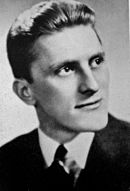

Винсе́нт Ви́ллем Ван Гог (нидерл. Vincent Willem van Gogh, нидерландский: [ˈvɪnsənt ˈʋɪləm vɑŋ ˈɣɔx] (Звук
слушать); 30 марта 1853, Грот-Зюндерт[en], Нидерланды — 29 июля 1890, Овер-сюр-Уаз, Франция) — нидерландский
художник-постимпрессионист, чьи работы оказали вневременное влияние на живопись XX века. За десять с небольшим
лет он создал более 2100 произведений, включая около 860 картин маслом. Среди них — портреты, автопортреты,
пейзажи, натюрморты и панно с изображением оливковых деревьев, кипарисов, полей пшеницы и подсолнухов. При жизни
был практически обойдён вниманием критиков.
Детство и юность
Родился 30 марта 1853 года в деревушке Грот-Зюндерт (нидерл. Groot Zundert) в провинции Северный Брабант на юге
Нидерландов, недалеко от бельгийской границы. Отцом Винсента был Теодор Ван Гог (родился 08.02.1822), пастор
реформатской церкви, а матерью — Анна Корнелия Карбентус, дочь почтенного переплётчика и продавца книг из Гааги.
Винсент был вторым по старшинству из семи детей Теодора и Анны Корнелии. Своё имя он получил в честь деда по
отцовской линии, который также всю свою жизнь посвятил протестантской церкви. Это имя предназначалось для первого
ребёнка Теодора и Анны, который родился на год раньше Винсента, но умер, не прожив и дня. Так Винсент, хотя и был
рождён вторым, стал старшим из детей.
Четыре года спустя после рождения Винсента, 1 мая 1857 года, родился его брат Теодорус Ван Гог (Тео). Помимо него,
у Винсента был брат Кор (Корнелис Винсент, 17 мая 1867) и три сестры — Анна Корнелия (17 февраля 1855), Лиз
(Элизабет Губерта, 16 мая 1859) и Вил (Виллемина Якоба, 16 марта 1862). Домашние помнят Винсента как своенравного,
трудного и нудного ребёнка со «странными манерами», что было причиной его частых наказаний. По словам гувернантки,
было в нём что-то необычное, что отличало его от других: из всех детей Винсент был ей менее приятен, и она не
верила, что из него может выйти нечто стоящее. Вне семьи, напротив, Винсент показывал обратную сторону своего
характера — был тихим, серьёзным, задумчивым и почти не играл с другими детьми. В глазах же односельчан он был
добродушным, дружелюбным, предупредительным, сострадательным, милым и скромным ребёнком. Когда ему исполнилось 7
лет, он пошёл в деревенскую школу, но через год его забрали оттуда, и вместе со своей сестрой Анной он обучался
дома, у гувернантки. 1 октября 1864 года он уехал в школу-интернат в Зевенберген, находившийся в 20 км от родного
дома. Отъезд из дома причинил много страданий Винсенту, он не мог забыть этого, даже будучи взрослым. 15 сентября
1866 года он начинает обучение в другом интернате — колледже Виллема II в Тилбурге. Винсенту хорошо давались языки
— французский, английский, немецкий. Там же он получал уроки рисования. В марте 1868 года, посреди учебного года,
Винсент неожиданно бросил школу и возвратился в отчий дом. На этом заканчивается его формальное образование. О
своём детстве он вспоминал так: «Моё детство было мрачным, холодным и пустым…».
Дуглас, Кирк
Кирк Дуглас (англ. Kirk Douglas — Кёрк Да́глас; настоящее имя И́сер (Иззи) Данило́вич, впоследствии Демский; 9
декабря 1916, Амстердам[en], штат Нью-Йорк, США — 5 февраля 2020, Беверли-Хиллз, Калифорния, США) — американский
актёр, звёздный актёр «золотой эры» Голливуда. Кроме того, писатель, филантроп и бывший посол доброй воли
Госдепартамента США[12][13].
В отличие от не менее знаменитого сына, Майкла Дугласа, долгая и успешная карьера в кино Кирка была отмечена
только почётным «Оскаром» в 1996 году. Обладатель премии «Золотой глобус» за роль Винсента Ван Гога в
биографической ленте «Жажда жизни».
Как писатель, Дуглас написал десять романов и мемуаров. Занимает 17-ю строку в списке Американского института
киноискусства среди величайших мужчин-легенд экрана классического голливудского кино[14].
Детство и юность
Кирк Дуглас родился под именем И́сер (И́зи) Данило́вич[a] в городе Амстердам[en] (штат Нью-Йорк) и был четвёртым
ребёнком в еврейской семье[15]. Его родители Гершл Даниелович (1884—1954) и Брайна Даниелович (урождённая
Санглель; 1884—1958)[16] происходили из города Чаусы Могилёвской губернии[17][18]. Они эмигрировали в США в 1910
году, через два года после женитьбы. Исер был единственным мальчиком, помимо него в семье росли шесть девочек.
Родители впоследствии поменяли семейную фамилию и американизировали имена, став Харри и Бертой Демски
(Demsky)[19].

Дуглас в 1939 году.
Семья была бедной, мальчик подрабатывал, разнося газеты и еду. Как вспоминал Кирк, стать актёром он мечтал ещё
со второго класса, устраивая представления дома[19][20].
Окончив школу, поступил в колледж St. Lawrence University. Успешно занимаясь борьбой, участвовал в
профессиональных схватках. Чтобы заработать на обучение в театральном колледже, работал капельдинером,
охранником на автостоянке и портье в гостинице[21]. По окончании колледжа в 1939 году отправился в Нью-Йорк и
поступил в престижную Американскую Академию драматических искусств. Юноша не мог оплатить обучение, но произвёл
такое впечатление на педагогов при прослушивании, что ему выделили стипендию[22]. Подрабатывал официантом в
небольшом кафе[23]. Как вспоминал актёр, с именем Исер едва ли можно было рассчитывать на успешную карьеру.
Руководитель студенческой труппы Карл Малден предложил сменить имя на Кирк Дуглас, и оно сразу понравилось[23].
В одной группе с ним училась Бетти Джоан Перски, впоследствии более известная как Лорен Бэколл, а также будущая
супруга актёра, Дайана Дилл. С Лорен они остались друзьями на всю жизнь. Именно Лорен помогла найти Кирку его
первые роли[20][24].
С началом Второй мировой войны отправился на призывной пункт, но ему отказали из-за проблем со зрением. Тогда он
приобрёл учебник «Зрение без очков» и тщательно занимался по нему в течение месяца, после чего добился своего.
Дугласа приняли на службу в одно из подразделений связи Тихоокеанского флота США, где он служил в 1941—1943
годах[20]. В ноябре 1943 года получил лёгкое ранение, во время пребывания в госпитале женился на Дайане Дилл. В
1944 году заболел дизентерией и был комиссован[25][b].